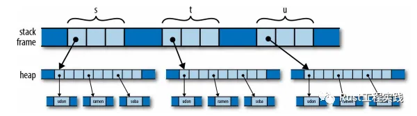
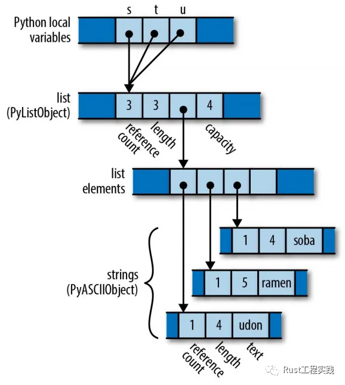
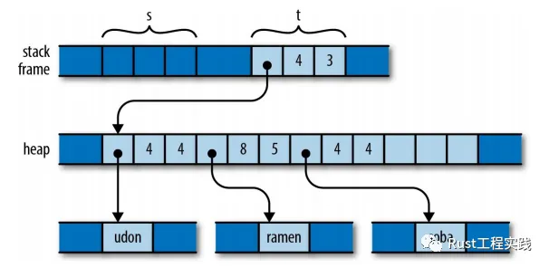
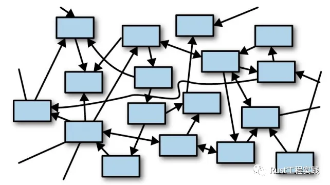
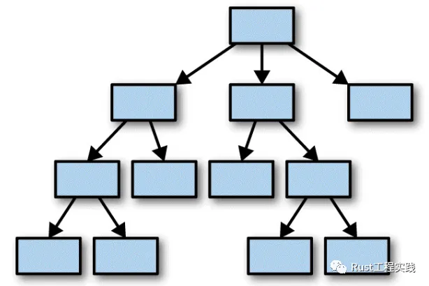

Rust的精髓
https://mp.weixin.qq.com/s?__biz=Mzg4MTYyNDU4Nw==&mid=2247483686&idx=1&sn=4e078a7e273d62fdbda099b908036603&scene=21#wechat_redirect
我嘗試用幾個簡單的詞彙說明Rust的設計精髓和底層原理，方便對比其他語言和Rust的不同之處
•Rust變數具有閱後即焚的特性, 相比之下其他語言的變數都是耐用品, 而Rust的變數屬於一次性用品•Rust語言中變數使用和值擁有是明確區分的，而且其他語言的變數等號基本都是賦值，但是Rust是所有權讓渡
三種常見的記憶體模式
從下面三行簡單的賦值語句, 我們直觀感受一下c++，python, 還有Rust的不同處理方式
# c++程式碼，僅僅用來說明簡單邏輯auto s = std::vector<std::string>{ "udon", "ramen", "soba" }; auto t = s; // 第一次使用sauto u = s; // 第二次使用s
c++ will copy
c++-copy
棧內的變數一直增長(從左往右)，變數也一直可以被訪問使用. 而且棧到堆的指向關係互相交織(網狀); 由於C++默認採用copy的方式進行operator=的操作，即使是std::vector複雜的STL結構，都是直接複製,鑑於這種默認動作開銷比較大，一般程式設計師會手工引入引用或者指針來最佳化(問題隨之而來，棧到堆的指針遲早變成網)
Python will count
python3-count
對於python而言，由於有gc的存在，gc採用了reference count技術，所以邏輯層次上多了一個PyObject的中間層，保存了計數資訊,由於採用的是計數機制，而python棧上的變數都是對同一個值的多個引用，修改其中一個總是會讓其他變數的值也都一起變化
Rust will move (and crush!!)
rust-will-move-and-crush
對於Rust而言，變數的賦值操作等同於值擁有權的讓渡, 它的意義就是auto t = s;這種語句一旦執行，相當於棧變數t取代了棧變數s,擁有了底層的值, 隨之而來的就是s在編譯階段就被編譯器標識為不再可用; 這是rust編譯器處理程式碼的邏輯，所以auto u = s;這樣的語句根本不會通過編譯，更無需再考慮程式碼執行;x 這一切都發生在程式碼分析階段，編譯過程中, 不管是簡單的賦值，還是被函數形參，還是一個值被從函數返回: 都是直接的管理權讓渡
思考題
一個for循環，內部一個print函數列印了上面列表，這樣一個簡單的邏輯不同的語言會出現什麼樣的記憶體結果?
•c++ OK, s可以再次被賦值使用，列印，進行各種操作•Python OK, s也可以正常使用•Rust OK, 可以正常列印，但是for訓話結束之後，所有字串堆中的資源都被釋放了, s變成了不可再用的變數
好了，是不是感覺太神奇了～～, Rust對變數的使用就是直接拿來，如果沒有新的上下文接受讓渡, 變數就被直接銷毀了, 這個神奇的設定就是Rust有別於其他各種語言，並且會有move sematic，borrow, lifetime的最底層設定, 這就是rust的遊戲規則.
簡單發散思考, 這個神奇的move sematic設定會導致什麼樣的直觀現象呢，類似與c++,java,python各種語言其實隨著程序一點一點執行，可能會有成百上千的object產生，其中的變數指針，引用，copy互相交織在一起，看起來就會亂糟糟的，這常被稱之為對象之海（如下圖)
a sea of objects
由於rust特立獨行的底層遊戲規則，不管程式執行了多久，邏輯上看來，不管對象內部有多少子元素，列表還是字典，永遠只有一個root（擁有它), 再加上我們將要說到的使用權的限制，Rust的堆疊變數總是非常幹淨清楚(給你了，你就是owner), 你不會有類似c++中三方庫函數返回了一個指針, 我應該free?的疑問.（如下圖)
